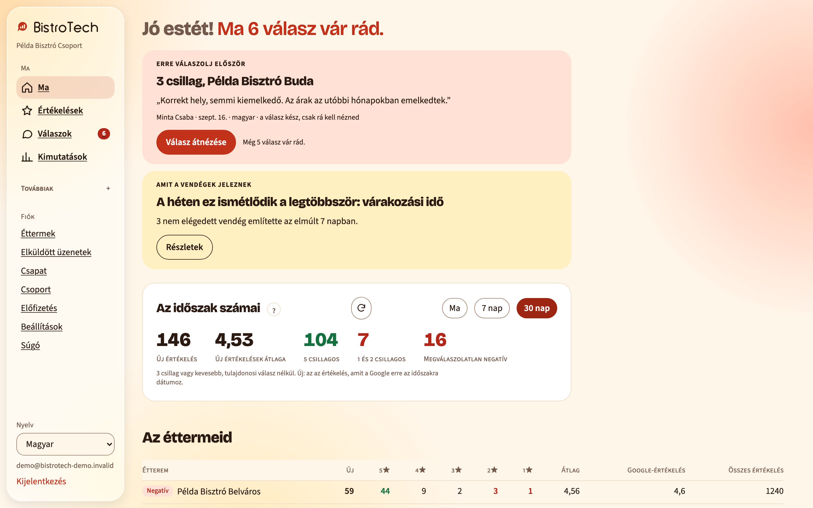
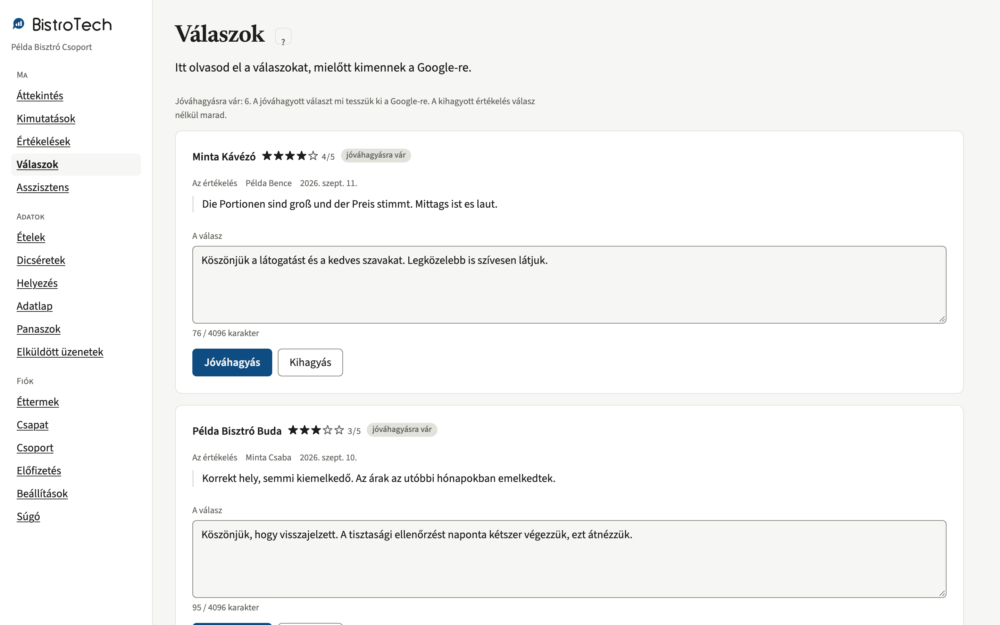

Egy helyen minden éttermed Google-értékelése, a válaszok és a számok. Reggelente jön a jelentés.
A BistroTech minden reggel megírja, mi történt tegnap az éttermeidnél. A válaszokat mi írjuk meg, te jóváhagyod, és kimennek a Google-re. A számokat és az értékeléseket bármikor visszanézed az oldalon.
- Minden étterem, minden nap, egy jelentésben.
- Minden választ te hagysz jóvá, mielőtt kimegy.
- Magyarul, magyar éttermeknek.
- 14 napig ingyen, kötöttség nélkül.
2026. szept. 15., kedd
Példa Bisztró · 3 új · átlag 4,33
5: 2 4: 0 3: 1 2: 0 1: 0
Google: 4,6 (1284)
Minta Étterem · 1 új · átlag 2,00
5: 0 4: 0 3: 0 2: 1 1: 0
Google: 4,4 (612)
Teszt Kávézó · 0 új · Google: 4,7 (238)
Σ Összesen: 4 új értékelés
5: 2 4: 0 3: 1 2: 1 1: 0
Megválaszolatlan negatívok · 1
Minta Étterem · 2 · szept. 12.
„A leves langyos volt, és húsz percet vártunk a számlára.”
Az oldal
Akkor nyitod meg, ha jóvá akarsz hagyni egy választ, vissza akarsz nézni egy hónapot, vagy el akarod olvasni, mit írtak a vendégek.


A képek a bemutatófiókról készültek. Az éttermek nevei, a vendégek szövegei és a számok kitaláltak.
Hogyan indul
Négy lépés. A harmadikhoz kell a Google-fiókod, a többihez semmi.
-
Regisztrálsz
Megadod az e-mail-címed és egy jelszót. A próbaidőszak 14 napig tart, és alatta nem állítunk ki számlát.
-
Felveszed az éttermet
Beírod a nevét és a címét, mi pedig megkeressük a Google cégprofilját. Több étterem is mehet egy fiókba.
-
Kezelőnek felveszel minket
A Google cégprofilon kezelőként felveszed a mi fiókunkat. Innentől olvassuk az értékeléseket, és innen tesszük ki a jóváhagyott válaszokat. A hozzáférést bármikor visszaveheted.
-
Holnap reggel jön az első jelentés
Az első napi jelentés a következő reggelen érkezik. Utána minden nap ugyanabban az órában, amit te állítasz be.
Mi van a csomagokban
Három csomag. A figyelés, a napi jelentés és a válaszok mindháromban benne vannak. A különbség az, hogy mennyit olvasunk ki a vendégek szövegeiből.
Induló
Az alap, minden étteremhez.
- Minden éttermed Google-értékelése, naponta
- Napi jelentés abban az órában, amit beállítasz
- Válasz minden értékeléshez, te hagyod jóvá
- Válaszkövetés: ki vár még válaszra, és mióta
- Riasztás, ha egycsillagos sorozat jön vagy esik az átlag
- Listafigyelő: ha a Google értékeléseket vesz le a profilról
- Ütem és helyezés: hány értékelés jön, és hol állsz a keresésben
- Módosításfigyelő: ha egy vendég utólag átírja az értékelését
Havi díj éttermenként, + áfa Ár hamarosan
Elemző
Arra válaszol, mit mondanak folyton.
- Minden, ami az Indulóban
- Témák: mi ismétlődik a vendégek szövegeiben, és hányszor
- Az éttermek összehasonlítása egymással
- A negatívok napszak szerint: ebéd, délután, este
- Vendégösszetétel: milyen nyelven írnak a vendégek
- Heti összefoglaló
Havi díj éttermenként, + áfa Ár hamarosan
Teljes
Arra válaszol, kiről és miről beszélnek.
- Minden, ami az Elemzőben
- Névemlítés: kit dicsérnek név szerint, és hányszor
- Ételemlítés: melyik fogásról mit írnak
- Havi összefoglaló: mi változott a hónapban, egy oldalon
- Panaszcsomag: dátumozott bizonyíték a Google felé, ha értékelés-roham ér
Havi díj éttermenként, + áfa Ár hamarosan
Automata válasz
Bármelyik csomaghoz bekapcsolható. Alapból csak a pozitív értékelésekre megy ki válasz úgy, hogy előtte senki nem olvassa el. Az egy- és kétcsillagosakra csak akkor, ha te kapcsolod be, és a következményét a bekapcsolás pillanatában kiírjuk.
Havi díj éttermenként, + áfa Ár hamarosan
Tíz étterem fölött a csomagot és az árat végigvesszük veled. Kérj bemutatót.
Az asszisztens
Kérdezhetsz tőle. A választ a saját értékeléseidből adja, és megmondja, mennyiből.
Kérdés: Mire panaszkodtak a legtöbbet a Példa Bisztróban szeptemberben?
Válasz: Három téma ismétlődik.
- Várakozás14 értékelés · átlag 3,1
- Ár9 értékelés · átlag 3,4
- Hangerő5 értékelés · átlag 3,8
A várakozás péntek és szombat este jön elő.
A Példa Bisztró 84 szeptemberi értékeléséből.
Illusztráció. Az étterem neve és a számok kitaláltak.
Tizenegy étterem, minden reggel
A BistroTech egy tizenegy éttermet üzemeltető budapesti csoportnál fut, minden reggel. Ott kezdődött, és ott megy élesben azóta is: minden változás előbb működik náluk, mint bárhol máshol.
A csoportot és az éttermeit nem nevezzük meg, és nem mutatunk tőlük értékelést. Ez a mi döntésünk, nem az ügyfél kérése.
Kezdd el ingyen, 14 napig
Regisztrálsz, felveszed az éttermet, és holnap reggel megjön az első jelentés. A próbaidőszak alatt nem állítunk ki számlát, és nem kell felmondanod semmit.
Több étterem, vagy egy csoport? Kérj bemutatót, és végigvesszük veled.
Kérj bemutatót
Megnézzük az éttermeid Google-profilját, megmutatjuk, hogyan nézne ki az első napi jelentés a saját adataiddal, és válaszolunk a kérdéseidre.
A BistroTechet a Netpromotion Invest Kft. üzemelteti. Magyarul beszélünk, és van, aki felveszi a telefont.
Megkaptuk.
Egy munkanapon belül jelentkezünk a megadott elérhetőségen, és megbeszélünk egy időpontot.